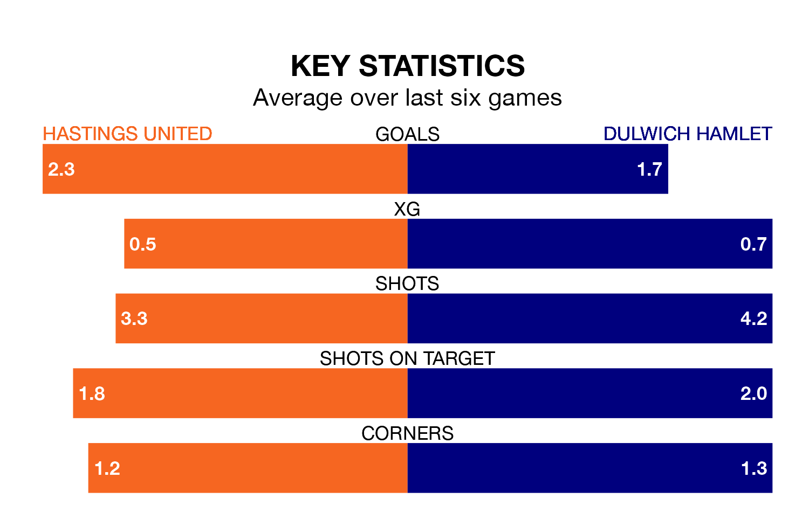

Hastings United face Dulwich Hamlet on Saturday seeking to protect their long unbeaten run in Isthmian Premier Division.
Hastings are unbeaten in six, with three wins and three draws, ahead of the 3pm kick-off.
They face a Dulwich Hamlet team who have won three and drawn one over the same number of games.
With 41 goals in 23 games so far this season, Hastings are scoring more than average in the league with 1.8 goals per game. And they are conceding fewer than average, letting in 32 goals at a rate of 1.4 per game.
Dulwich Hamlet are also above average scorers, with 1.8 goals per game, compared to a league average of 1.6. They have conceded 1.7 goals per game.
United are sixth in the table after 23 games, of which they have won 11 and drawn five, earning 38 points.
The away side are five places behind the hosts in 11th, with eight wins and eight draws putting them on 32 points.
Hastings's last match was on January 6, a 3-2 win against Cheshunt.
Dulwich Hamlet beat Hashtag United 2-1 last time out, also on January 6.
Updated: 15:34, 08/01/24